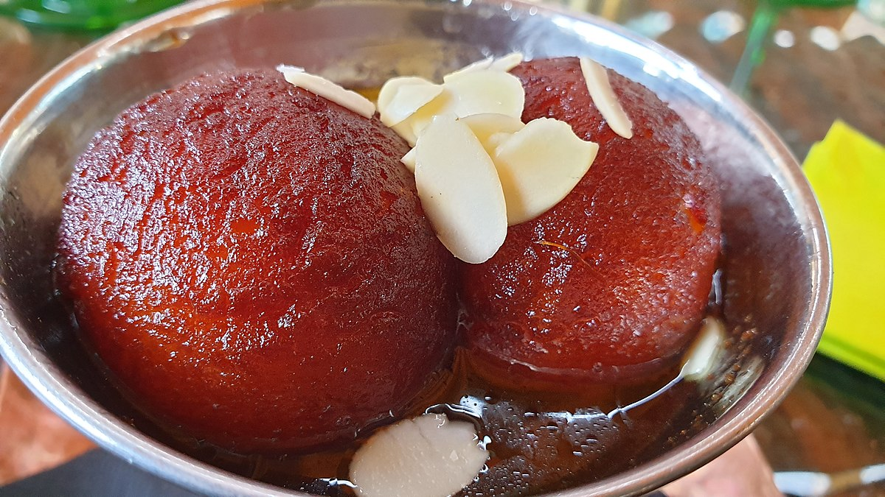

Gulab Jamun!
Gulab Jamun Pic
Gulab Jamun is a very popular Indian sweet.
There are some versions of making it with khoya, milk powder, bread or sweet potatoes.
Indeed it is a favorite Indian sweet for many of us. In parties, weddings and even in an Indian dinner meal,
gulab jamun happens to be one of the sweets served after the meals.
Ingredients
- skimmed milk
- maida
- butter
- rava
- baking soda
- Cardamom
Steps
- Take khoya (mawa or evaporated milk) in a bowl. Mash it very well.
There should be no lumps.
You can also grate and then mash the khoya.
- Then add grated paneer, rava (sooji), all purpose flour (maida), baking powder and cardamom powder to the mashed khoya.
There should be no lumps in both the mawa and paneer.
- As if they are there, then you will find the texture of the gulab jamun not so good.
The bits and pieces of mava or paneer will give a bite in the mouth, when you have the gulab jamun.
They won’t be smooth.
-
Mix well. Add milk and gather together to form a dough with milk. Don’t knead.
-
Just gently mix. If you are unable to form balls or if the mixture appears dry, then add a few teaspoons of milk.
Cover the dough and keep aside for 30 mins.
-
Make small balls from the dough. Cover the balls and keep aside.
Making Sugar Syrup
-
Dissolve sugar in water. Heat the sugar solution till it become sticky.
You just need to switch off the fire before the syrup reaches a one thread consistency.
-
Add rose water and stir. Keep the sugar solution aside.
On cooling if the sugar syrup crystallizes, then just add 2 to 3 tbsp water and warm the syrup again.
It will again return to a liquid state.
Frying
-
Meanwhile, while the sugar syrup is cooking, heat oil till its medium hot.
Lower the flame and wait for a minute.
Then gently place the dough balls in the oil.
-
Once they start to have tiny golden spots, keep on rotating them in the oil, so that the jamun are evenly browned.
-
Remove the fried jamun and then drain them on kitchen paper towels to remove excess oil.
Making Gulab Jamun
-
Then place the hot fried dough balls in the sugar syrup.
Continue frying the rest of the dough balls in batches.
-
When all the jamuns are placed in the sugar syrup, then keep the whole pan with the sugar syrup and the gulab jamun, on a low flame for 1 to 2 minutes till the jamun become soft.
-
Heating helps the gulab jamun to absorb the syrup and become soft. The jamun increase a bit in size.
Don’t overcook as then the jamun can break.
-
Use a large pan, so that the jamuns are not overcrowded and you can easily stir them gently while they are simmering.
-
Serve gulab jamun warm or at room temperature.
You can also chill them and serve them cold.
Garnish with rose petals or almond slivers.